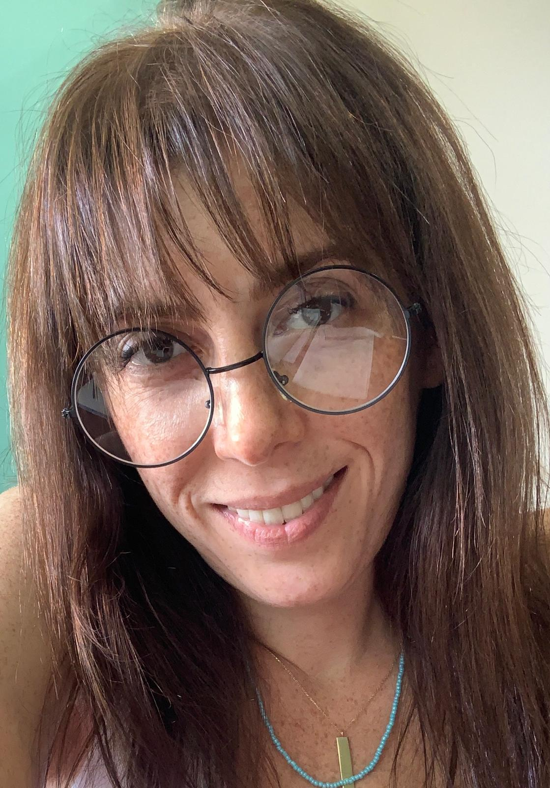

EBRU ROJDA ZENGOĞLU

Özet
İdari yönetim asistanlığı, talep ve şikayet birim danışmanlığı ve görsel iletişimde deneyim sahibi, çalışkan ve öğrenme becerisi yüksek bir bireyim.
Eğitim
- Dış Ticaret, Dış Ticaret bölümü - Anadolu Üniversitedi (2021)
İş Deneyimi
BEGO Matbaa ve Reklamcılık
- Ofis elemanı ve iç işleyiş deneyimi
- Grafik tasarım ve baskı aşaması
- Pazarlama ve iş takibi
Freelance Work
- Kurumsal kimlik oluşturulması, katalok, broşür, kartvizit, davetiye tasrımı ve konuya göre sunum hazırlama
Hukuk Bürosu
- Yönetici asistanlığı
- Dosya ve İcra takibi
- Ofis ön muhasebe
Coşkun Kırtasiye ve Pazarlama
- Ön muhasebe
- Sipariş takibi
- Afiş tasarım ve basım
Büyükşehir Belediyesi
- Siyasi parti meclis grubunun asistanlığı
- Gruba gelen talep ve şikayetlerin raporlanması ve sonuçlanması
- Grup meclis arşiv oluşturulması
Beceriler
- Müşteri hizmetleri: 🌟🌟🌟
- Microsoft Office Paketi: 🌟🌟🌟
- Organizasyon Becerileri: 🌟🌟🌟
Sertifikalar
- Grafik Tasarım - Mikrosis Bilgisayar ve İngilizce Merkezi
- Photoshop ile Web Arayüz Tasarımı - İSMEK
- Telefonda Etkili İletişim - İGED
Diğer